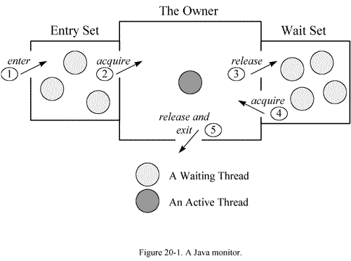

Thread Dump 是非常有用的诊断 Java 应用问题的工具。每一个 Java 虚拟机都有及时生成所有线程在某一点状态的 thread-dump 的能力，虽然各个 Java 虚拟机打印的 thread dump 略有不同，但是 大多都提供了当前活动线程的快照，及 JVM 中所有 Java 线程的堆栈跟踪信息，堆栈信息一般包含完整的类名及所执行的方法，如果可能的话还有源代码的行数。
头部信息：时间，JVM 信息
1 2 | 2011-11-02 19:05:06 Full thread dump Java HotSpot(TM) Server VM (16.3-b01 mixed mode): |
线程 INFO 信息块：
1 2 3 4 5 6 7 8 9 10 11 12 | 1. "Timer-0" daemon prio=10 tid=0xac190c00 nid=0xaef in Object.wait() [0xae77d000] # 线程名称：Timer-0；线程类型：daemon；优先级: 10，默认是5；# JVM线程id：tid=0xac190c00，JVM内部线程的唯一标识（通过java.lang.Thread.getId()获取，通常用自增方式实现）。# 对应系统线程id（NativeThread ID）：nid=0xaef，和top命令查看的线程pid对应，不过一个是10进制，一个是16进制。（通过命令：top -H -p pid，可以查看该进程的所有线程信息）# 线程状态：in Object.wait()；# 起始栈地址：[0xae77d000]，对象的内存地址，通过JVM内存查看工具，能够看出线程是在哪儿个对象上等待；2. java.lang.Thread.State: TIMED_WAITING (on object monitor)3. at java.lang.Object.wait(Native Method)4. -waiting on <0xb3885f60> (a java.util.TaskQueue) # 继续wait 5. at java.util.TimerThread.mainLoop(Timer.java:509)6. -locked <0xb3885f60> (a java.util.TaskQueue) # 已经locked7. at java.util.TimerThread.run(Timer.java:462) |
Java thread statck trace：是上面 2-7 行的信息。到目前为止这是最重要的数据，Java stack trace 提供了大部分信息来精确定位问题根源。
Java thread statck trace 详解：
堆栈信息应该逆向解读：程序先执行的是第 7 行，然后是第 6 行，依次类推。
1 2 | - locked <0xb3885f60> (a java.util.ArrayList)- waiting on <0xb3885f60> (a java.util.ArrayList) |
也就是说对象先上锁，锁住对象 0xb3885f60，然后释放该对象锁，进入 waiting 状态。为啥会出现这样的情况呢？看看下面的 Java 代码示例，就会明白：
1 2 3 4 5 | synchronized(obj) { ......... obj.wait(); ......... } |
如上，线程的执行过程，先用 synchronized 获得了这个对象的 Monitor（对应于 locked <0xb3885f60> ）。当执行到 obj.wait()，线程即放弃了 Monitor的所有权，进入 “wait set”队列（对应于 waiting on <0xb3885f60> ）。
在堆栈的第一行信息中，进一步标明了线程在代码级的状态，例如：
1 | java.lang.Thread.State: TIMED_WAITING (parking) |
解释如下：
1 2 3 4 5 6 7 8 9 10 11 12 13 14 15 16 17 18 19 20 21 22 23 | |blocked|> This thread tried to enter asynchronized block, but the lock was taken by another thread. This thread isblocked until the lock gets released.|blocked (on thin lock)|> This is the same state asblocked, but the lock in question is a thin lock.|waiting|> This thread calledObject.wait() on an object. The thread will remain there until some otherthread sends a notification to that object.|sleeping|> This thread calledjava.lang.Thread.sleep().|parked|> This thread calledjava.util.concurrent.locks.LockSupport.park().|suspended|> The thread's execution wassuspended by java.lang.Thread.suspend() or a JVMTI agent call. |
线程的状态是一个很重要的东西，因此 thread dump 中会显示这些状态，通过对这些状态的分析，能够得出线程的运行状况，进而发现可能存在的问题。线程的状态在 Thread.State 这个枚举类型中定义：
1 2 3 4 5 6 7 8 9 10 11 12 13 14 15 16 17 18 19 20 21 22 23 24 25 26 27 28 29 30 31 32 33 34 35 36 37 38 39 40 41 42 43 44 45 46 47 48 49 50 51 52 53 54 55 56 57 58 59 60 61 62 63 64 65 | public enum State{ /** * Thread state for a thread which has not yet started. */ NEW, /** * Thread state for a runnable thread. A thread in the runnable * state is executing in the Java virtual machine but it may * be waiting for other resources from the operating system * such as processor. */ RUNNABLE, /** * Thread state for a thread blocked waiting for a monitor lock. * A thread in the blocked state is waiting for a monitor lock * to enter a synchronized block/method or * reenter a synchronized block/method after calling * {@link Object#wait() Object.wait}. */ BLOCKED, /** * Thread state for a waiting thread. * A thread is in the waiting state due to calling one of the * following methods: * <ul> * <li>{@link Object#wait() Object.wait} with no timeout</li> * <li>{@link #join() Thread.join} with no timeout</li> * <li>{@link LockSupport#park() LockSupport.park}</li> * </ul> * * <p>A thread in the waiting state is waiting for another thread to * perform a particular action. * * For example, a thread that has called <tt>Object.wait()</tt> * on an object is waiting for another thread to call * <tt>Object.notify()</tt> or <tt>Object.notifyAll()</tt> on * that object. A thread that has called <tt>Thread.join()</tt> * is waiting for a specified thread to terminate. */ WAITING, /** * Thread state for a waiting thread with a specified waiting time. * A thread is in the timed waiting state due to calling one of * the following methods with a specified positive waiting time: * <ul> * <li>{@link #sleep Thread.sleep}</li> * <li>{@link Object#wait(long) Object.wait} with timeout</li> * <li>{@link #join(long) Thread.join} with timeout</li> * <li>{@link LockSupport#parkNanos LockSupport.parkNanos}</li> * <li>{@link LockSupport#parkUntil LockSupport.parkUntil}</li> * </ul> */ TIMED_WAITING, /** * Thread state for a terminated thread. * The thread has completed execution. */ TERMINATED;} |
NEW：
每一个线程，在堆内存中都有一个对应的Thread对象。Thread t = new Thread(); 当刚刚在堆内存中创建 Thread 对象，还没有调用 t.start() 方法之前，线程就处在 NEW 状态。在这个状态上，线程与普通的 Java 对象没有什么区别，就仅仅是一个堆内存中的对象。
RUNNABLE：
该状态表示线程具备所有运行条件，在运行队列中准备操作系统的调度，或者正在运行。 这个状态的线程比较正常，但如果线程长时间停留在在这个状态就不正常了，这说明线程运行的时间很长（存在性能问题），或者是线程一直得不得执行的机会（存在线程饥饿的问题）。
BLOCKED：
线程正在等待获取 Java 对象的监视器(也叫内置锁)，即线程正在等待进入由 synchronized 保护的方法或者代码块。synchronized 用来保证原子性，任意时刻最多只能由一个线程进入该临界区域，其他线程只能排队等待。
WAITING：
处在该线程的状态，正在等待某个事件的发生，只有特定的条件满足，才能获得执行机会。而产生这个特定的事件，通常都是另一个线程。也就是说，如果不发生特定的事件，那么处在该状态的线程一直等待，不能获取执行的机会。比如：
A 线程调用了 obj 对象的 obj.wait() 方法，如果没有线程调用 obj.notify 或 obj.notifyAll，那么A线程就没有办法恢复运行；
如果 A 线程调用了 LockSupport.park()，没有别的线程调用 LockSupport.unpark(A)，那么A没有办法恢复运行。
TIMED_WAITING：
J.U.C 中很多与线程相关类，都提供了限时版本和不限时版本的 API。TIMEDWAITING 意味着线程调用了限时版本的 API，正在等待时间流逝。当等待时间过去后，线程一样可以恢复运行。如果线程进入了 WAITING 状态，一定要特定的事件发生才能恢复运行；而处在 TIMEDWAITING 的线程，如果特定的事件发生或者是时间流逝完毕，都会恢复运行。
TERMINATED：
线程执行完毕，执行完 run 方法正常返回，或者抛出了运行时异常而结束，线程都会停留在这个状态。这个时候线程只剩下 Thread 对象了，没有什么用了。
Wait on condition：The thread is either sleeping or waiting to be notified by another thread.
该状态说明它在等待另一个条件的发生，来把自己唤醒，或者干脆它是调用了 sleep(n)。
此时线程状态大致为以下几种：
java.lang.Thread.State: WAITING (parking)：
一直等那个条件发生；
java.lang.Thread.State: TIMED_WAITING (parking或sleeping)：
定时的，那个条件不到来，也将定时唤醒自己。
Waiting for Monitor Entry 和 in Object.wait()：The thread is waiting to get the lock for an object (some other thread may be holding the lock). This happens if two or more threads try to execute synchronized code. Note that the lock is always for an object and not for individual methods.
在多线程的 JAVA 程序中，实现线程之间的同步，就要说说 Monitor。 Monitor 是 Java 中用以实现线程之间的互斥与协作的主要手段，它可以看成是对象或者 Class 的锁。每一个对象都有，也仅有一个 Monitor。下面这个图，描述了线程和 Monitor 之间关系，以及线程的状态转换图：

如上图，每个 Monitor 在某个时刻，只能被一个线程拥有，该线程就是 “ActiveThread”，而其它线程都是 “Waiting Thread”，分别在两个队列 “Entry Set” 和 “Wait Set” 里等候。在 “Entry Set” 中等待的线程状态是 “Waiting for monitor entry”，而在 “Wait Set” 中等待的线程状态是 “in Object.wait()”。
先看 “Entry Set” 里面的线程。我们称被 synchronized 保护起来的代码段为临界区。当一个线程申请进入临界区时，它就进入了 “Entry Set” 队列。对应的 code 就像：
1 2 3 | synchronized(obj) { .........} |
这时有两种可能性：
该 monitor 不被其它线程拥有， Entry Set 里面也没有其它等待线程。本线程即成为相应类或者对象的 Monitor 的 Owner，执行临界区的代码。
该 monitor 被其它线程拥有，本线程在 Entry Set 队列中等待。
在第一种情况下，线程将处于 “Runnable”的状态，而第二种情况下，线程 DUMP会显示处于 “waiting for monitor entry”。如下：
1 2 3 4 5 | "Thread-0" prio=10 tid=0x08222eb0 nid=0x9 waiting for monitor entry [0xf927b000..0xf927bdb8] at testthread.WaitThread.run(WaitThread.java:39) - waiting to lock <0xef63bf08> (a java.lang.Object) - locked <0xef63beb8> (a java.util.ArrayList) at java.lang.Thread.run(Thread.java:595) |
临界区的设置，是为了保证其内部的代码执行的原子性和完整性。但是因为临界区在任何时间只允许线程串行通过，这和我们多线程的程序的初衷是相反的。如果在多线程的程序中，大量使用 synchronized，或者不适当的使用了它，会造成大量线程在临界区的入口等待，造成系统的性能大幅下降。如果在线程 DUMP 中发现了这个情况，应该审查源码，改进程序。
再看 “Wait Set” 里面的线程。当线程获得了 Monitor，进入了临界区之后，如果发现线程继续运行的条件没有满足，它则调用对象（一般就是被 synchronized 的对象）的 wait() 方法，放弃 Monitor，进入 “Wait Set” 队列。只有当别的线程在该对象上调用了 notify() 或者 notifyAll()，“Wait Set”队列中线程才得到机会去竞争，但是只有一个线程获得对象的 Monitor，恢复到运行态。在 “Wait Set” 中的线程， DUMP 中表现为： in Object.wait()。如下：
1 2 3 4 5 6 7 | "Thread-1" prio=10 tid=0x08223250 nid=0xa in Object.wait() [0xef47a000..0xef47aa38] at java.lang.Object.wait(Native Method) - waiting on <0xef63beb8> (a java.util.ArrayList) at java.lang.Object.wait(Object.java:474) at testthread.MyWaitThread.run(MyWaitThread.java:40) - locked <0xef63beb8> (a java.util.ArrayList) at java.lang.Thread.run(Thread.java:595) |
综上，一般 CPU 很忙时，则关注 runnable 的线程，CPU 很闲时，则关注 waiting for monitor entry 的线程。
上面提到如果 synchronized 和 monitor 机制运用不当，可能会造成多线程程序的性能问题。在 JDK 5.0 中，引入了 Lock 机制，从而使开发者能更灵活的开发高性能的并发多线程程序，可以替代以往 JDK 中的 synchronized 和 Monitor 的 机制。但是，要注意的是，因为 Lock 类只是一个普通类，JVM 无从得知 Lock 对象的占用情况，所以在线程 DUMP 中，也不会包含关于 Lock 的信息， 关于死锁等问题，就不如用 synchronized 的编程方式容易识别。
1 2 3 4 5 6 7 8 9 10 11 12 13 14 15 16 17 18 19 20 21 22 23 24 25 26 27 28 29 30 31 32 | package jstack;public class BlockedState{ private static Object object = new Object(); public static void main(String[] args) { Runnable task = new Runnable() { @Override public void run() { synchronized (object) { long begin = System.currentTimeMillis(); long end = System.currentTimeMillis(); // 让线程运行5分钟,会一直持有object的监视器 while ((end - begin) <= 5 * 60 * 1000) { } } } }; new Thread(task, "t1").start(); new Thread(task, "t2").start(); }} |
先获取 object 的线程会执行 5 分钟，这 5 分钟内会一直持有 object 的监视器，另一个线程无法执行处在 BLOCKED 状态：
1 2 3 4 5 6 7 8 9 10 11 12 13 14 15 16 | Full thread dump Java HotSpot(TM) Server VM (20.12-b01 mixed mode): "DestroyJavaVM" prio=6 tid=0x00856c00 nid=0x1314 waiting on condition [0x00000000] java.lang.Thread.State: RUNNABLE "t2" prio=6 tid=0x27d7a800 nid=0x1350 waiting for monitor entry [0x2833f000] java.lang.Thread.State: BLOCKED (on object monitor) at jstack.BlockedState$1.run(BlockedState.java:17) - waiting to lock <0x1cfcdc00> (a java.lang.Object) at java.lang.Thread.run(Thread.java:662) "t1" prio=6 tid=0x27d79400 nid=0x1338 runnable [0x282ef000] java.lang.Thread.State: RUNNABLE at jstack.BlockedState$1.run(BlockedState.java:22) - locked <0x1cfcdc00> (a java.lang.Object) at java.lang.Thread.run(Thread.java:662) |
通过 thread dump 可以看到：t2 线程确实处在 BLOCKED (on object monitor)。waiting for monitor entry 等待进入 synchronized 保护的区域。
1 2 3 4 5 6 7 8 9 10 11 12 13 14 15 16 17 18 19 20 21 22 23 24 25 26 27 28 29 30 31 32 33 34 35 36 37 38 | package jstack;public class WaitingState{ private static Object object = new Object(); public static void main(String[] args) { Runnable task = new Runnable() { @Override public void run() { synchronized (object) { long begin = System.currentTimeMillis(); long end = System.currentTimeMillis(); // 让线程运行5分钟,会一直持有object的监视器 while ((end - begin) <= 5 * 60 * 1000) { try { // 进入等待的同时,会进入释放监视器 object.wait(); } catch (InterruptedException e) { e.printStackTrace(); } } } } }; new Thread(task, "t1").start(); new Thread(task, "t2").start(); }} |
1 2 3 4 5 6 7 8 9 10 11 12 13 14 15 16 17 18 19 20 21 22 | Full thread dump Java HotSpot(TM) Server VM (20.12-b01 mixed mode): "DestroyJavaVM" prio=6 tid=0x00856c00 nid=0x1734 waiting on condition [0x00000000] java.lang.Thread.State: RUNNABLE "t2" prio=6 tid=0x27d7e000 nid=0x17f4 in Object.wait() [0x2833f000] java.lang.Thread.State: WAITING (on object monitor) at java.lang.Object.wait(Native Method) - waiting on <0x1cfcdc00> (a java.lang.Object) at java.lang.Object.wait(Object.java:485) at jstack.WaitingState$1.run(WaitingState.java:26) - locked <0x1cfcdc00> (a java.lang.Object) at java.lang.Thread.run(Thread.java:662) "t1" prio=6 tid=0x27d7d400 nid=0x17f0 in Object.wait() [0x282ef000] java.lang.Thread.State: WAITING (on object monitor) at java.lang.Object.wait(Native Method) - waiting on <0x1cfcdc00> (a java.lang.Object) at java.lang.Object.wait(Object.java:485) at jstack.WaitingState$1.run(WaitingState.java:26) - locked <0x1cfcdc00> (a java.lang.Object) at java.lang.Thread.run(Thread.java:662) |
可以发现 t1 和 t2 都处在 WAITING (on object monitor)，进入等待状态的原因是调用了 in Object.wait()。通过 J.U.C 包下的锁和条件队列，也是这个效果，大家可以自己实践下。
1 2 3 4 5 6 7 8 9 10 11 12 13 14 15 16 17 18 19 20 21 22 23 24 25 26 27 28 29 30 31 32 33 34 35 36 37 38 39 40 41 42 | package jstack;import java.util.concurrent.TimeUnit;import java.util.concurrent.locks.Condition;import java.util.concurrent.locks.Lock;import java.util.concurrent.locks.ReentrantLock;public class TimedWaitingState{ // java的显示锁,类似java对象内置的监视器 private static Lock lock = new ReentrantLock(); // 锁关联的条件队列(类似于object.wait) private static Condition condition = lock.newCondition(); public static void main(String[] args) { Runnable task = new Runnable() { @Override public void run() { // 加锁,进入临界区 lock.lock(); try { condition.await(5, TimeUnit.MINUTES); } catch (InterruptedException e) { e.printStackTrace(); } // 解锁,退出临界区 lock.unlock(); } }; new Thread(task, "t1").start(); new Thread(task, "t2").start(); }} |
1 2 3 4 5 6 7 8 9 10 11 12 13 14 15 16 17 18 19 20 21 22 | Full thread dump Java HotSpot(TM) Server VM (20.12-b01 mixed mode): "DestroyJavaVM" prio=6 tid=0x00856c00 nid=0x169c waiting on condition [0x00000000] java.lang.Thread.State: RUNNABLE "t2" prio=6 tid=0x27d7d800 nid=0xc30 waiting on condition [0x2833f000] java.lang.Thread.State: TIMED_WAITING (parking) at sun.misc.Unsafe.park(Native Method) - parking to wait for <0x1cfce5b8> (a java.util.concurrent.locks.AbstractQueuedSynchronizer$ConditionObject) at java.util.concurrent.locks.LockSupport.parkNanos(LockSupport.java:196) at java.util.concurrent.locks.AbstractQueuedSynchronizer$ConditionObject.await(AbstractQueuedSynchronizer.java:2116) at jstack.TimedWaitingState$1.run(TimedWaitingState.java:28) at java.lang.Thread.run(Thread.java:662) "t1" prio=6 tid=0x280d0c00 nid=0x16e0 waiting on condition [0x282ef000] java.lang.Thread.State: TIMED_WAITING (parking) at sun.misc.Unsafe.park(Native Method) - parking to wait for <0x1cfce5b8> (a java.util.concurrent.locks.AbstractQueuedSynchronizer$ConditionObject) at java.util.concurrent.locks.LockSupport.parkNanos(LockSupport.java:196) at java.util.concurrent.locks.AbstractQueuedSynchronizer$ConditionObject.await(AbstractQueuedSynchronizer.java:2116) at jstack.TimedWaitingState$1.run(TimedWaitingState.java:28) at java.lang.Thread.run(Thread.java:662) |
可以看到 t1 和 t2 线程都处在 java.lang.Thread.State: TIMED_WAITING (parking)，这个 parking 代表是调用的 JUC 下的工具类，而不是 Java 默认的监视器。
CPU 飙高，load 高，响应很慢
一个请求过程中多次 dump；
对比多次 dump 文件的 runnable 线程，如果执行的方法有比较大变化，说明比较正常。如果在执行同一个方法，就有一些问题了；
查找占用 CPU 最多的线程
使用命令：top -H -p pid（pid 为被测系统的进程号），找到导致 CPU 高的线程 ID，对应 thread dump 信息中线程的nid，只不过一个是十进制，一个是十六进制；
在thread dump中，根据top命令查找的线程id，查找对应的线程堆栈信息；
CPU 使用率不高但是响应很慢
进行 dump，查看是否有很多 thread struck 在了 i/o、数据库等地方，定位瓶颈原因；
请求无法响应
死锁经常表现为程序的停顿，或者不再响应用户的请求。从操作系统上观察，对应进程的 CPU 占用率为零，很快会从 top 或 prstat 的输出中消失。
比如在下面这个示例中，是个较为典型的死锁情况：
1 2 3 4 5 6 7 8 9 10 11 | "Thread-1" prio=5 tid=0x00acc490 nid=0xe50 waiting for monitor entry [0x02d3f000..0x02d3fd68] at deadlockthreads.TestThread.run(TestThread.java:31) - waiting to lock <0x22c19f18> (a java.lang.Object) - locked <0x22c19f20> (a java.lang.Object) "Thread-0" prio=5 tid=0x00accdb0 nid=0xdec waiting for monitor entry [0x02cff000..0x02cff9e8] at deadlockthreads.TestThread.run(TestThread.java:31) - waiting to lock <0x22c19f20> (a java.lang.Object) - locked <0x22c19f18> (a java.lang.Object) |
在 JAVA 5 中加强了对死锁的检测。线程 Dump 中可以直接报告出 Java 级别的死锁，如下所示：
1 2 3 4 5 6 7 8 9 | Found one Java-level deadlock: ============================= "Thread-1": waiting to lock monitor 0x0003f334 (object 0x22c19f18, a java.lang.Object), which is held by "Thread-0""Thread-0": waiting to lock monitor 0x0003f314 (object 0x22c19f20, a java.lang.Object), which is held by "Thread-1" |
热锁，也往往是导致系统性能瓶颈的主要因素。其表现特征为：由于多个线程对临界区，或者锁的竞争，可能出现：
频繁的线程的上下文切换：从操作系统对线程的调度来看，当线程在等待资源而阻塞的时候，操作系统会将之切换出来，放到等待的队列，当线程获得资源之后，调度算法会将这个线程切换进去，放到执行队列中。
大量的系统调用：因为线程的上下文切换，以及热锁的竞争，或者临界区的频繁的进出，都可能导致大量的系统调用。
大部分 CPU 开销用在“系统态”：线程上下文切换，和系统调用，都会导致 CPU 在 “系统态 ”运行，换而言之，虽然系统很忙碌，但是 CPU 用在 “用户态 ”的比例较小，应用程序得不到充分的 CPU 资源。
随着 CPU 数目的增多，系统的性能反而下降。因为 CPU 数目多，同时运行的线程就越多，可能就会造成更频繁的线程上下文切换和系统态的 CPU 开销，从而导致更糟糕的性能。
上面的描述，都是一个 scalability（可扩展性）很差的系统的表现。从整体的性能指标看，由于线程热锁的存在，程序的响应时间会变长，吞吐量会降低。
那么，怎么去了解 “热锁 ”出现在什么地方呢？
一个重要的方法是结合操作系统的各种工具观察系统资源使用状况，以及收集 Java 线程的 DUMP 信息，看线程都阻塞在什么方法上，了解原因，才能找到对应的解决方法。
JVM 运行过程中产生的一些比较重要的线程罗列如下：
["线程名称","所属","解释说明"],
["Attach Listener","JVM","Attach Listener 线程是负责接收到外部的命令，而对该命令进行执\n行的并把结果返回给发送者。通常我们会用一些命令去要求 JVM 给\n我们一些反馈信息，如：java -version、jmap、jstack等等。 如果该\n线程在 JVM 启动的时候没有初始化，那么，则会在用户第一次执行\n JVM 命令时，得到启动。"],
["Signal Dispatcher","JVM","前面提到 Attach Listener 线程的职责是接收外部 JVM 命令，当命令\n接收成功后，会交给 signal dispather 线程去进行分发到各个不同的\n模块处理命令，并且返回处理结果。signal dispather 线程也是在第\n一次接收外部 JVM 命令时，进行初始化工作。"],
["CompilerThread0","JVM","用来调用 JITing，实时编译装卸 Class 。通常，JVM 会启动多个线\n程来处理这部分工作，线程名称后面的数字也会累加，例\n如：CompilerThread1。"],
["Concurrent Mark-Sweep GC Thread","JVM","并发标记清除垃圾回收器（就是通常所说的 CMS GC）线程， 该线\n程主要针对于老年代垃圾回收。ps：启用该垃圾回收器，需要在\n JVM 启动参数中加上：-XX:+UseConcMarkSweepGC。"],
["DestroyJavaVM","JVM","执行 main() 的线程，在 main 执行完后调用 JNI 中的 \njni_DestroyJavaVM() 方法唤起 DestroyJavaVM 线程，处于等待状态，\n等待其它线程（Java 线程和 Native 线程）退出时通知它卸载 JVM。\n每个线程退出时，都会判断自己当前是否是整个 JVM 中最后一个\n非 deamon 线程，如果是，则通知 DestroyJavaVM 线程卸载 JVM。"],
["Finalizer Thread","JVM","这个线程也是在 main 线程之后创建的，其优先级为 10，主要用于\n在垃圾收集前，调用对象的 finalize()方法；关于 Finalizer 线程的\n几点：\n\n 1) 只有当开始一轮垃圾收集时，才会开始调用 finalize() 方法；\n因此并不是所有对象的 finalize() 方法都会被执行；\n\n 2) 该线程也是 daemon 线程，因此如果虚拟机中没有其他非\n daemon 线程，不管该线程有没有执行完 finalize() 方法，JVM 也会退出；\n\n 3) JVM 在垃圾收集时会将失去引用的对象包装成 Finalizer 对象\n（Reference 的实现），并放入 ReferenceQueue，由 Finalizer 线程来处理；\n最后将该 Finalizer 对象的引用置为 null，由垃圾收集器来回收；\n\n 4) JVM 为什么要单独用一个线程来执行 finalize()方法呢？如果\n JVM 的垃圾收集线程自己来做，很有可能由于在 finalize() 方法中误操作\n导致 GC 线程停止或不可控，这对 GC 线程来说是一种灾难；"],
["Low Memory Detector","JVM","这个线程是负责对可使用内存进行检测，如果发现可用内存低，分\n配新的内存空间。"],
["Reference Handler","JVM","JVM 在创建 main 线程后就创建 Reference Handler 线程，其优先级最\n高，为 10，它主要用于处理引用对象本身（软引用、弱引用、虚引\n用）的垃圾回收问题 。"],
["VM Thread","JVM","这个线程就比较牛 b 了，是 JVM 里面的线程母体，根据 hotspot 源\n码（vmThread.hpp）里面的注释，它是一个单个的对象（最原始的\n线程）会产生或触发所有其他的线程，这个单个的 VM 线程是会被\n其他线程所使用来做一些VM操作（如：清扫垃圾等）。"]
参考链接：